Microsoft Office Exel
Добавляем картинку
Как мы упомянули в начале данной статьи, в примечания к ячейкам Эксель можно добавлять не только текст, но и изображения. Вот как это делается:
1. Для начала нужно добавить комментарий. Затем, находясь в процессе его редактирования наводим курсор на одну из границ ее поля. Когда мы вместо обычного курсора мыши увидим значок в виде четырех стрелок в разные стороны, щелкаем правой кнопкой мыши и выбираем “Формат примечания” в открывшемся списке.
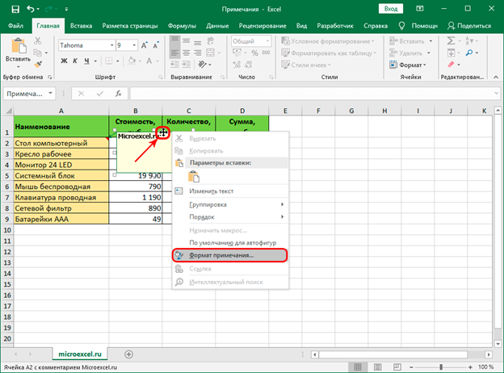
2. На экране появится окно форматирования. Переключаемся во вкладку “Цвета и линии”, где щелкаем по выпадающему списку напротив параметра “Цвет”. В раскрывшемся перечне выбираем “Способы заливки”.
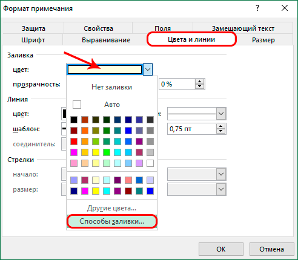
3. В следующем окне переключаемся во вкладку “Рисунок”, в которой жмем кнопку с таким же названием.
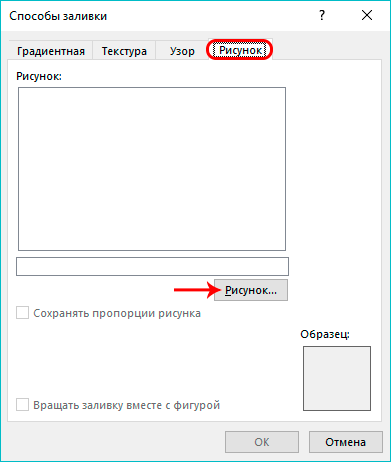
4. Появится окно, в котором мы можем выбрать нужную картинку:
• из файла на компьютере (в нашем случае);
• воспользовавшись поиском Bing;
• загрузив из хранилища OneDrive.
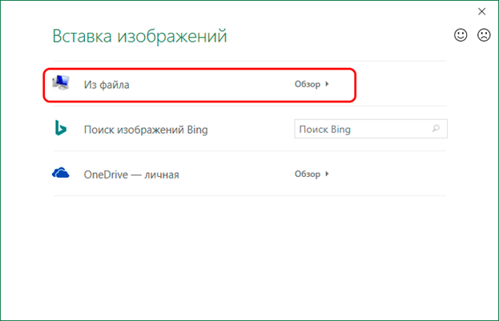
5. Выбираем местоположение файла с изображением и открываем его.
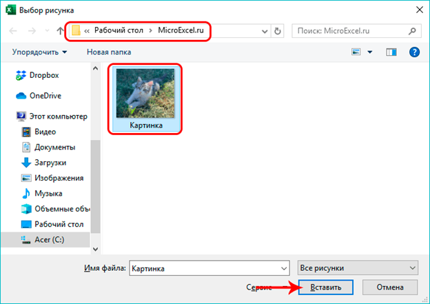
6. Система нас вернет в предыдущее окно, в котором отображается выбранная нами картинка. Включаем сохранение пропорций рисунка, после чего щелкаем OK.
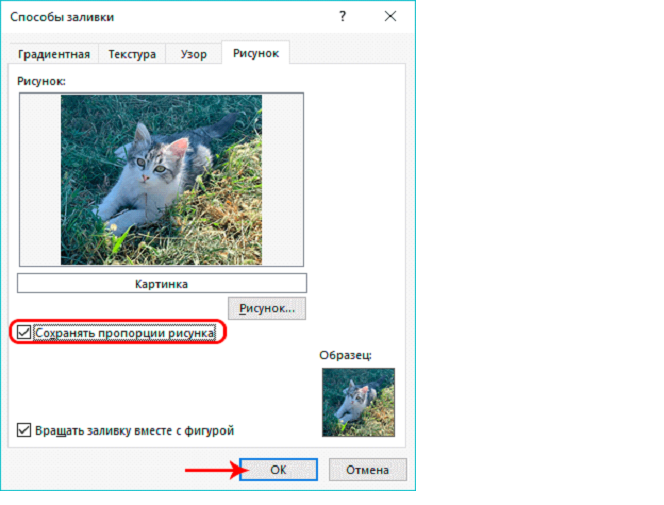
7. Мы снова окажемся в окне форматирования. Теперь нам нужно привязать примечание с картинкой к ячейке. Для этого переключаемся во вкладку “Защита”, в которой убираем галочку “Защищаемый объект”.
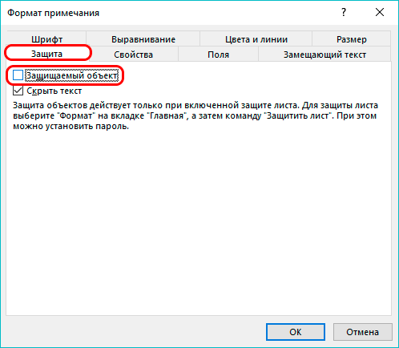
8. Теперь переходим во вкладку “Свойства”, где ставим отметку напротив пункта “Перемещать и изменять объект вместе с ячейками”, после чего щелкаем OK.
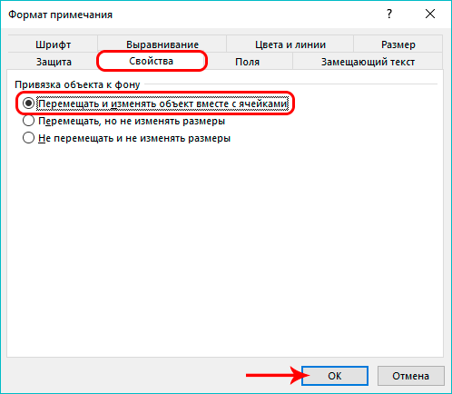
9. Все готово. Картинка успешно вставлена в качестве комментария к ячейке.
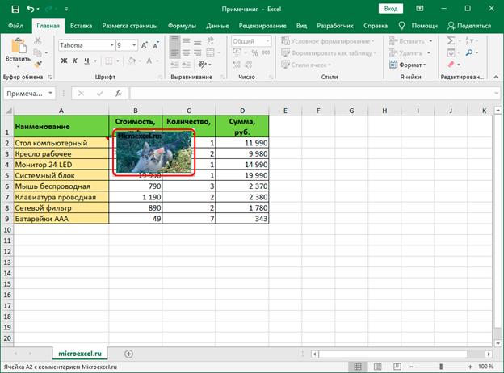
10. Растянув границы поля с примечанием мы можем вместить в нем все изображение, одновременно увеличив его размеры.
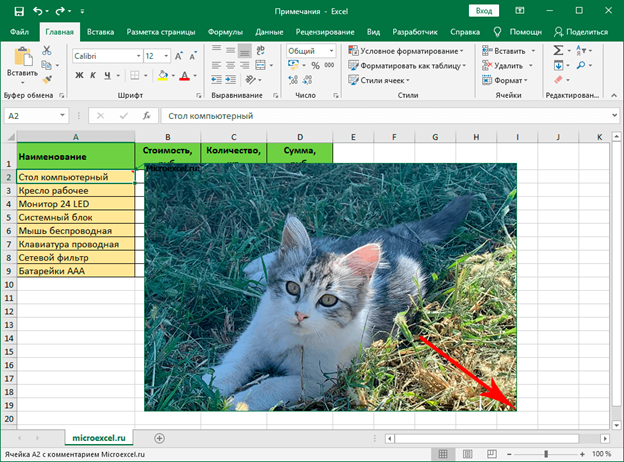
Удаление
Удалить примечания можно также, как и создать или отредактировать их. 1. Щелкаем по ячейке с комментарием правой кнопкой мыши, в контекстном меню выбираем пункт “Удалить примечание”.
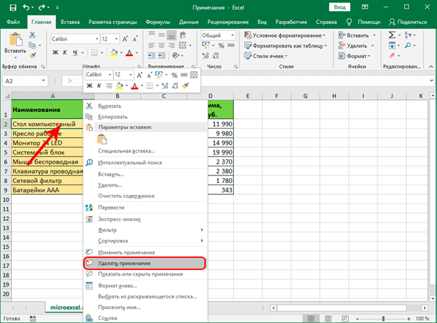
2. Также данную операцию можно выполнить во вкладке “Рецензирование”, где, предварительно выбрав нужную ячейку, жмем кнопку “Удалить примечание”.
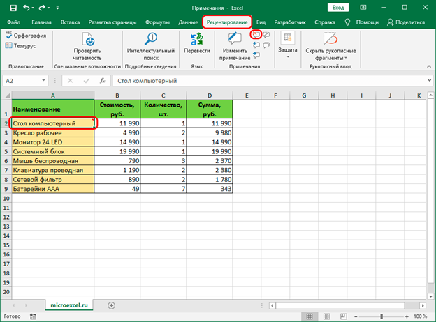
^ Наверх